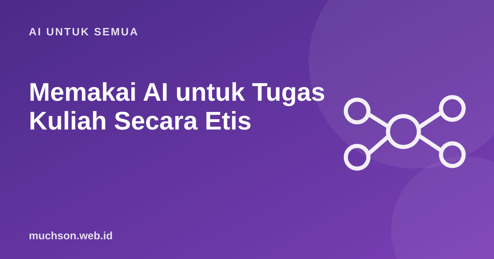

Banyak mahasiswa bertanya apakah memakai AI untuk tugas itu curang. Jawabannya bergantung pada aturan dosen dan kampus, serta cara Anda memakainya. Prinsip umumnya sederhana: AI boleh membantu Anda belajar, bukan menggantikan Anda belajar.
Oleh Muhammad Muchson Attoyibi··1 menit baca

Garis pembeda yang masuk akal
Aturan sebenarnya ditentukan dosen dan kampus Anda. Tanyakan sebelum memakai.
Bagaimana dengan Anda? Uji skenarionya
Kebiasaan yang melindungi Anda
Soal pendeteksi AI
Alat pendeteksi tulisan AI tidak sepenuhnya dapat diandalkan dan bisa salah menuduh. Jangan bergantung padanya, baik sebagai mahasiswa maupun dosen. Yang paling aman adalah transparan dan bisa menjelaskan karya Anda sendiri.
Cara bertanya kepada dosen
Sampaikan dengan jelas: "Apakah saya boleh memakai AI untuk memeriksa tata bahasa dan menjelaskan konsep, tetapi bukan untuk menulis isi tugas? Bagaimana cara mencantumkannya?" Pertanyaan seperti ini menunjukkan niat baik dan menghindari kesalahpahaman.
Tanya jawab
Apakah memakai AI otomatis dianggap plagiarisme?
Tidak otomatis. Masalah muncul bila hasilnya diserahkan sebagai karya sendiri tanpa izin atau pengungkapan, atau berisi kutipan palsu.
Apakah perlu mencantumkan penggunaan AI?
Bila kebijakan mata kuliah mengharuskan, ya. Mencantumkan bantuan AI secara jujur biasanya lebih aman.
Bagaimana belajar tetap efektif dengan AI?
Coba dulu sendiri, lalu minta AI memeriksa atau menjelaskan. Menjelaskan ulang dengan kata sendiri membuat belajar lebih melekat.
Bagikan:
Muhammad Muchson AttoyibiSoftware Engineer dan Academic Trainer di Malang. Menulis tentang teknologi, belajar, dan hal praktis sehari-hari. Tentang saya